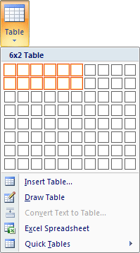

Free
computer Tutorials
|
Free
computer Tutorials
|
|
 home home |
|
|||||
Microsoft Word 2007 to 2010Section Ten: 1 2
Word TablesTables allow you to present figures and statistics in an easy-to-read manner. In this section, you'll design two tables. The first one will be fairly simply, and will look like this: Off we go then.
Create a new blank document and add the title and subtitle as above. To add a table to a page, click on the Insert tab on the Word ribbon. From the Insert tab, locate the Tables panel, and the Table item: Click on Table to see the following menu: If you wanted a quick table, you could select the bottom item in the menu above. You'd then see a list of inbuilt table designs. There are three other ways to add a table using the menu above. The
first one is with the white squares. Move your mouse over the squares
and you'll see them highlighted. Highlight the same ones as in the image
below (6 columns and 2 rows):  Once you've highlighted the correct squares left click to add the table to your blank page. It should look like this: The squares in the table that Word has drawn for you are called Cells. Your cursor will be flashing in the first cell. You can go ahead and type into the cells. Type the following into the first row of your table (without the commas): USA, Wales, Scotland, Ireland, Japan, Others To get the cursor into the next cell you can either press the tab key on your keyboard, or just click inside the cell with your left mouse button. When you're finished, your table will look like this one: If you move your mouse pointer up to the top left of the table, you'll notice that a little cross appears in a box. While in the bottom right of the table a white square appears. Like in the image below: The cross in the box is the table Move symbol. To use it, hold down your left mouse button and drag the table somewhere else on your page. But the process is a bit fiddly. The white square, bottom right, is the resize symbol. It works in the same way as the other white resize squares you have met. You now need to enter some figures into your tables. So enter the following numbers into the second row of the table (you don't need to insert the commas): 12, 24, 20, 32, 7, 10 Your table should now look like the one below: As you can see, it's not very tidy at the moment. Let's centre the text and the numbers. To centre all the table data, you first need to select it. You can do that either in the normal way of just highlighting everything in the cells. Or try this:
Your table will then look like this: With your data highlighted, locate the Alignment panel on the Layout tab: From the Alignment panel, choose the Align Centre option: All your table data will then be centred: It's looking a bit better. We can format the table some more, though. We'll add a background colour to the bottom row. To add a background colour, do the following:
(You can also just use your mouse to highlight the row. Click once to the left of the first cell, outside of the table border. Or just highlight text in the usual manner.) With the bottom row highlighted, click on the Design tab on the Word ribbon. From the Design tab locate the Shading item, which is on the Table Styles panel (you'll see how to use table styles shortly). From the Shading menu, select any colour that takes your fancy (we clicked on "More Colors" to get the softer yellow): The final result should then look like this:
And that's it for table one. You'll now design a table using the inbuilt table styles. Table Styles in Word 2007/2010 --> <--Back to the Word Contents Page View all our Home Study Computer Courses
|
||||||
|